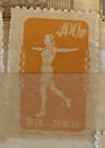
| SOURCE | TITLE| IMAGE MATCH | click to source page |
| eBay | China S4 1952 Gymnastics by Radio. Mixed Blocks Four. | eBay | 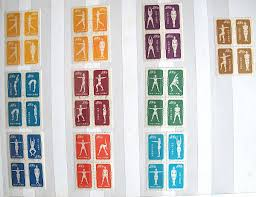 |
| eBay | Uncertified VF (Very Fine) Chinese Stamps for sale | eBay | 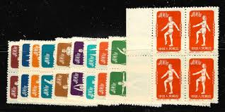 |
| PicClick | PRC CHINA 1920 MH **, stamp booklet Year of the Rat 1984 mint, KW 70,- $26.98 - PicClick | 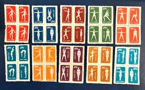 |
| eBay | Radio Chinese Stamps for sale | eBay | 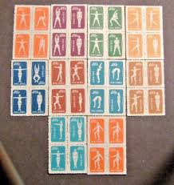 |
| Stamp Auction | Prices Realized | 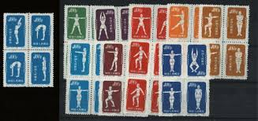 |
| Stamp Auction | Prices Realized | 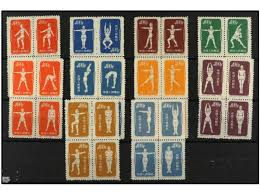 |
| eBay | PR China Stamps S1-S12 Outdated Money hundreds Yuan all 12 sets 82 mint | eBay |  |
| eBay | China PRC Stamps MNH Lot Of 5 Early Blocks | eBay |  |
| eBay Australia | Individual Chinese Stamps for sale | Shop with Afterpay | eBay Australia | 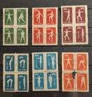 |
| Etsy | Vintage China Stamps Post 1949 - Etsy | 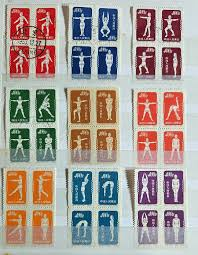 |
| Hi all. I like these stamps. What you think | 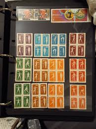 | |
| us-china-stamps.com | Many China, USA, USSR & Worldwide Postal Stamps from my 60 years Collection 中国、美国、苏联及世界各国邮票 | 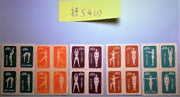 |
| Mercari | People Republic of China Radio 1954 Complete | Mercari | 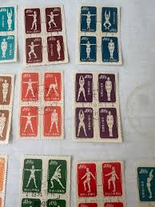 |
| eBay | 中环otctg: (@Hkotccc) Wq4r for sale | eBay | 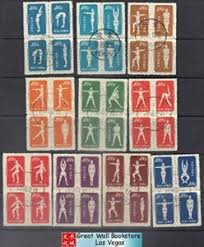 |
| ifs.rs | People's Republic Of China 1955 Radio Gymnastics Complete Set Used |  |
| eBay | CHINA SCOTT # 141-50 MINT NO GUM | eBay | 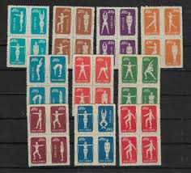 |
| HipStamp | China Stamp: 1952 Sc#145A Physical Exercises #17- Mnh- Stamp. Very Rare. | Asia - China, General Issue Stamp / HipStamp | 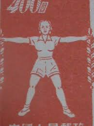 |
| eBay | CHINA PRC 1952 Sc#141-50 S4 Gymnastics Original Print Postal Used Set RARE | eBay | 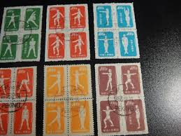 |
| Invaluable.com | Sold at Auction: CHINA Stamp Collection, High CV, 1 of 3 |  |
| dmgestaocontabil.com.br | People Republic of China Radio 1954 Complete Set of Blocks of 4 Used | 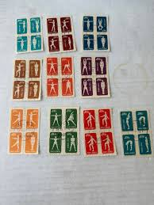 |
| eBay UK | Radio Chinese Stamps for sale | eBay UK | 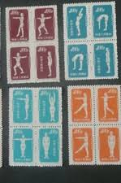 |
| eBay | 1952 PR China Sc #147 Orange Radio Gymnastics Original print MNH NGAI | eBay |  |
| Arthur Johnson & Son | Stamps; a file of China stamps and postal history | 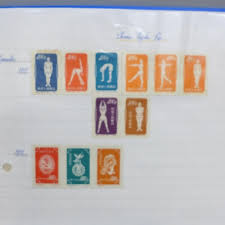 |
| eBay | China, Peoples Republic of - Scott 141-150 Reprints (1952) Mint NH VF, CV $55 C | eBay | 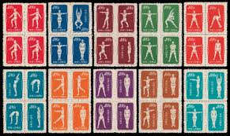 |
| HipStamp | China Peoples Republic 1952 Radio Gymnastics REPRINT Complete (10 ) VF/NH(**) | Asia - China, General Issue Stamp / HipStamp | 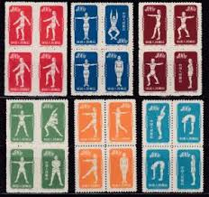 |
| PicClick UK | 8997) OLD CHINA & Japan Stamps On Album Pages £10.00 - PicClick UK | 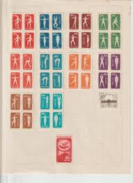 |
| eBay | CHINESE RADIO GYMNASTICS, COMMUNIST ERA STAMP BLOCK. UNHINGED | eBay |  |
| PicClick | PR CHINA 1958 S29 Sc#394-97 Sports-Aviation Publicity Stamps. MNH. NGAI. $14.00 - PicClick | 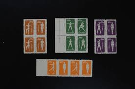 |
| Stamp Auction | Sparks Auctions Sale - 21 Page 11 |  |
| eBay | Sports collection 1952 - 1974 ** + canceled from all over the world, 610 stamps | eBay | 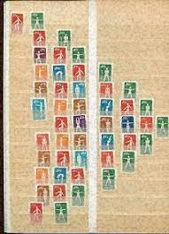 |
| Stamp Community Forum | China: How To Identify Originals/Reprints S4 Gymnastics By Radio - Stamp Community Forum | 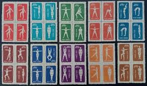 |
| eBay | 1952, CHINA, Yang #S14/53 - GYMNASTICS BY RADIO - MINT NO GUM AS ISSUED | eBay | 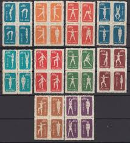 |
| eBay | 94761 - PRC CHINA - STAMPS - 1952 Radio Gymnastics Mi # 145-175 Fine USED | eBay |  |
| Blogger.com | Stamp Art: 2014-07-06 |  |
| eBay | China 1952 Gymnastics by radio collection blocks and singles | eBay | 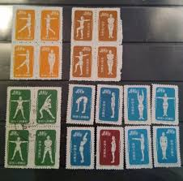 |
| eBay UK | 5 Number Chinese Stamps for sale | eBay UK | 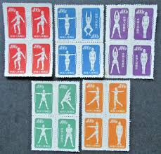 |
| eBay | China, 1952 Gymnastics, Unused set in block of 4, no gum as issued | eBay | 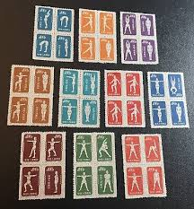 |
| eBay | CHINA PRC 1952 Sc#141-50 S4 Physical Exercises REPRINTS Set MNH XF | eBay | 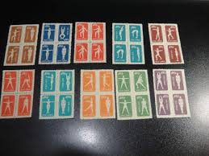 |
| eBay | 1955 CHINA Physical Exercises #141~150 Reprint MLH, Great condition. SV$55.00 | eBay | 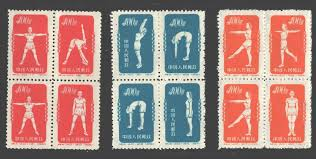 |
| eBay | CHINA 1952 GYMNASTICS BLOCKS 28 stamps...MINT LH | eBay | 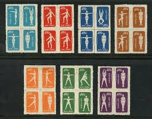 |
| eBay | EDW1949SELL : CHINA PRC 1952 Scott #141-50 Sports Cplt set of reprints. VF MNGAI | eBay | 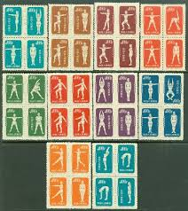 |
| eBay | China 1952 -Mint stamps issued NO gum. Mi nr.: 146 I/175 I.REPRINT(VG) MV-15985 | eBay | 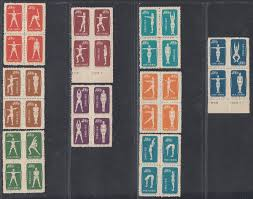 |
| eBay | CHINA PRC 141-50 SP20 | eBay | 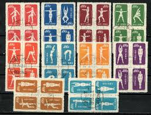 |
| eBay | China Sport set 4 Blocks of 4 1952 MNH A-10 | eBay |  |
| PicClick UK | CHINA PR 1952 GYMNASTICS BY RADIO MNH no gum as issued Yang set S4R 40 stamps £47.50 - PicClick UK | 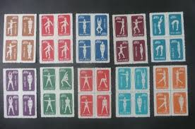 |
| eBay UK | CHINA PRC 1952 Sc#141-50 S4 Gymnastics Original Print Postal Used Set RARE | eBay UK | 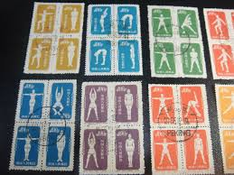 |
| Etsy | Lot of 6 Chinese Stamps “radio Gymnastics” 1952, Lot #608 - Etsy |  |
| Etsy | Free Shipping 4 China Postage Stamps ,gymnastics by Radio,1954 - Etsy |  |
| eBay | China S4 Gymnastics By Radio - Reprint Set of 40v Used in Pairs (SL078) | eBay | 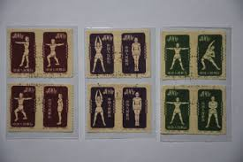 |
| Etsy | Miss O by Oscar De La Renta Taffeta Tule Dress, Size XS - Etsy | 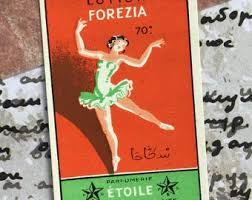 |
| Facts and Details | SPORTS IN CHINA: MOTORSPORTS, COMMUNISM AND SPORTS BUSINESS | Facts and Details | 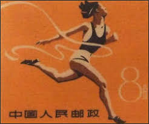 |
| Free stamp catalogue | Stamp 1974, Brazil Sylvester run 1v, 1974 - Collecting Stamps - Freestampcatalogue.com - The free online stampcatalogue with over 500.000 stamps listed. | 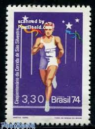 |
| eBay | SHARJAH 1972 OLYMPICS, Paintings, Cpl XF MNH/** ImPerf Sheet Set LOOK ,Flags,UAE | eBay | 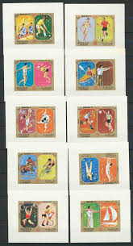 |
| eBay | Radio Chinese Stamps for sale | eBay | 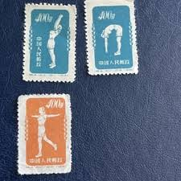 |
| eBay | Matchbox Labels Russia for sale | eBay | 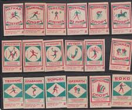 |
| eBay | Vintage PLAYGIRL BAR Matchbook Cover INDIANAPOLIS INDIANA Sal & Jim | eBay | 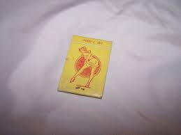 |
| eBay | China (PRC) 148d MNG Block of 10 2015 CV $399.00 | eBay |  |
| eBay | Vintage Pin Badge Handball USSR Soviet Union U8 | eBay | 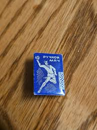 |
| Violity | Упаковка от спичек США Nose Art Pin Up (112823954) - buy on Violity | 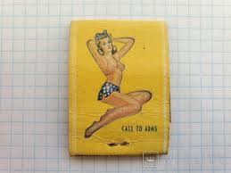 |
| Poppe Stamps | Poppe Stamps: Australia, 1977, 643, Arts, Dance, Musicians, Arts, Dance, Musicians - stamps for sale by theme and country | 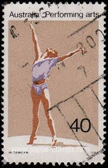 |